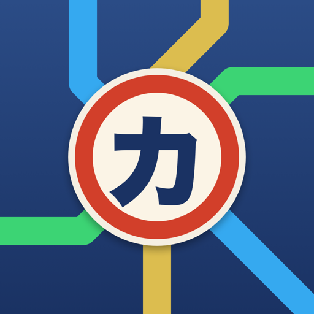

Every character you learn unlocks real words — from menus, signs and train stations. Not flashcards for their own sake: Japanese you can actually use.
Each writing system is its own metro network. Every line is a place in Japan, every lesson a station, and every station earns you a stamp.
Words borrowed from other languages: ラーメン ramen, コーヒー coffee, ホテル hotel. You understand them the moment you read them.
The heart of Japanese: ありがとう thank you, おにぎり rice ball, すみません excuse me.
81 survival kanji for the signs all around you: 出口 exit, 無料 free, 営業中 open, 千円 ¥1,000.
Real phrases that mix both scripts: トイレはどこですか — where's the toilet? Opens as you learn.
Built around one idea: learning a character should be useful right away.
Characters are taught in the order that unlocks the most common real-world words — chosen from research on how often they're used.
Point your camera at a menu or sign. See which words you can already read, then say them out loud.
A monster attacks the last station of every line. Pass the review to save it.
Build phrases you'll actually say: ordering, asking for directions, prices, saying "no bag, thanks".
Collect a station stamp for every lesson, like the ones travelers collect across Japan.
Every character, word and price is spoken — with a slow mode, syllable by syllable.
Kana Metro is made by one person who's learning Japanese too. No ads, no subscriptions, no tracking, no account. Your progress stays on your phone.
Kana Metro is free for learners. If you'd like to be part of that, let's talk.
Using Kana Metro with your students, or want a course shaped around your class? Get in touch.
Helping visitors enjoy Japan? Travelers who can read the signs get more out of every trip.
Writing or making videos about learning Japanese? Happy to share more about the app.
Email partners@kanametro.com, or use the contact form.